🏛️ कक्षा 10 राजनीति विज्ञान (ल


📌 भाग 1: लोकतंत्र के परिणामों का मूल्यांकन
🌟 चित्र 5.1: लोकतंत्र के 5 प्रमुख मूल्यांकन मापदंड
समानता, गरिमा, बेहतर फैसले, शांतिपूर्ण सामंजस्य व गलतियां सुधारने का अवसर।
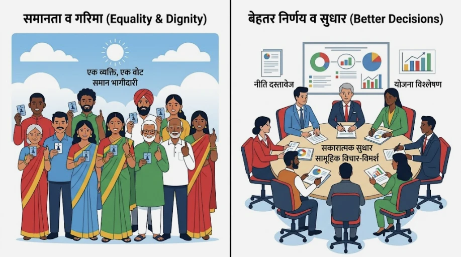
🏛️ चित्र 5.1: लोकतंत्र बेहतर क्यों?
1. समानता व गरिमा: सभी नागरिकों को समान राजनीतिक अधिकार और गरिमा प्रदान करना | 2. बेहतर निर्णय व सुधार: व्यापक विचार-विमर्श द्वारा गुणवत्तापूर्ण निर्णय लेना और गलतियों को सुधारने का अवसर मिलना।
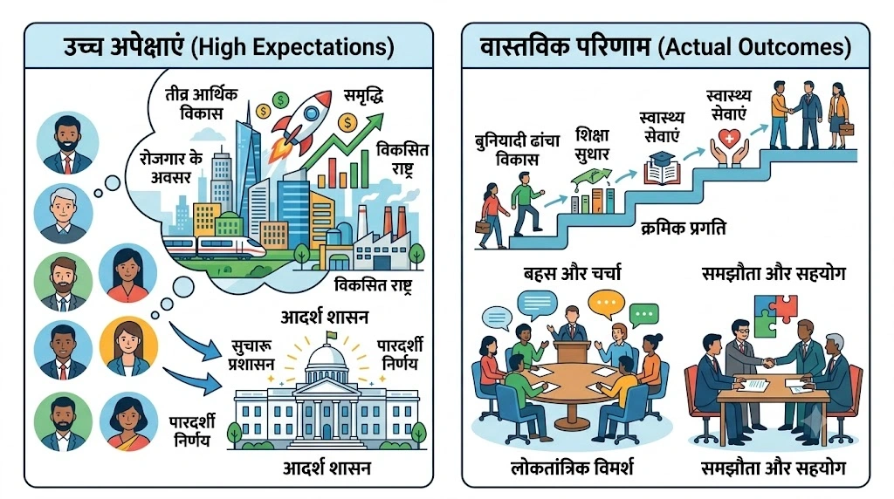
⚖️ चित्र 5.2: लोकतंत्र की कसौटी - उम्मीदें बनाम वास्तविकता
1. उच्च अपेक्षाएं: गरीबी उन्मूलन, तीव्र विकास व भ्रष्टाचार-मुक्त शासन की जन-महत्वाकांक्षा | 2. वास्तविक परिणाम: निर्णय प्रक्रिया में समय लगता है, किंतु यह तानाशाही से अधिक वैध और जन-स्वीकार्य होती है।
📌 भाग 2: उत्तरदायी, जिम्मेदार एवं वैध सरकार
🏛️ चार्ट 5.2: उत्तरदायी, जिम्मेदार एवं वैध सरकार
जवाबदेही व पारदर्शिता + जनता की आवश्यकताओं की पूर्ति + निष्पक्ष चुनाव द्वारा चुनी वैध सरकार।
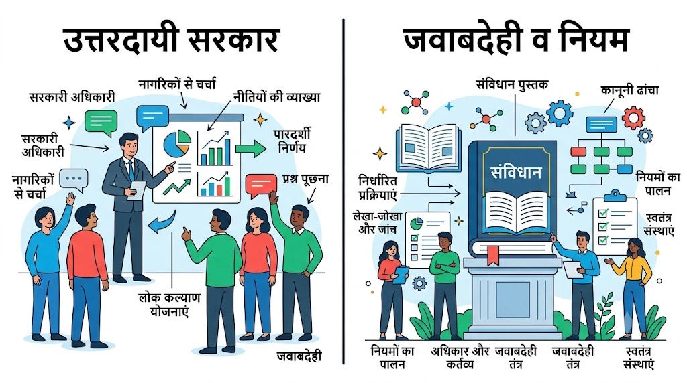
📢 चित्र 5.3: उत्तरदायी सरकार और जवाबदेही
1. जनप्रतिनिधियों की जवाबदेही: निर्वाचित नेता जनता व विधायिका के सवालों का उत्तर देने के लिए बाध्य हैं | 2. नियमित चुनाव व जनमत: प्रत्येक 5 वर्ष में चुनाव द्वारा जनता प्रदर्शन के आधार पर सरकार को बदल सकती है।
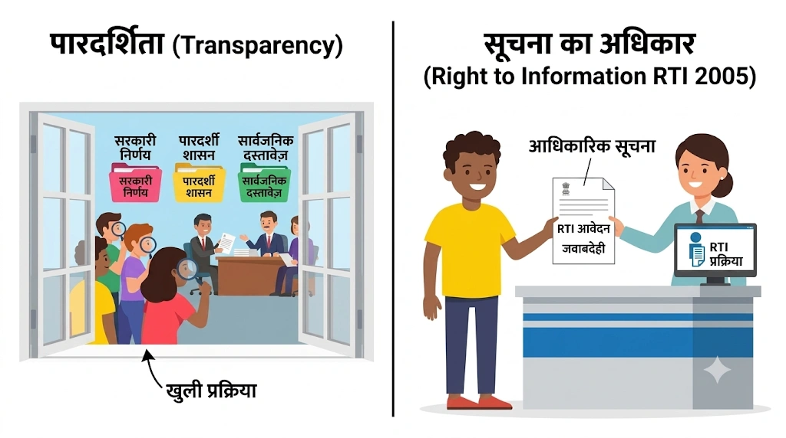
🔍 चित्र 5.4: पारदर्शिता और सूचना का अधिकार
1. निर्णय प्रक्रिया की जांच: नागरिक यह जान सकते हैं कि फैसले नियमानुसार लिए गए हैं या नहीं | 2. सूचना का अधिकार: सरकारी फाइलों व विकास कार्यों का ब्योरा मांगने का संवैधानिक अधिकार।
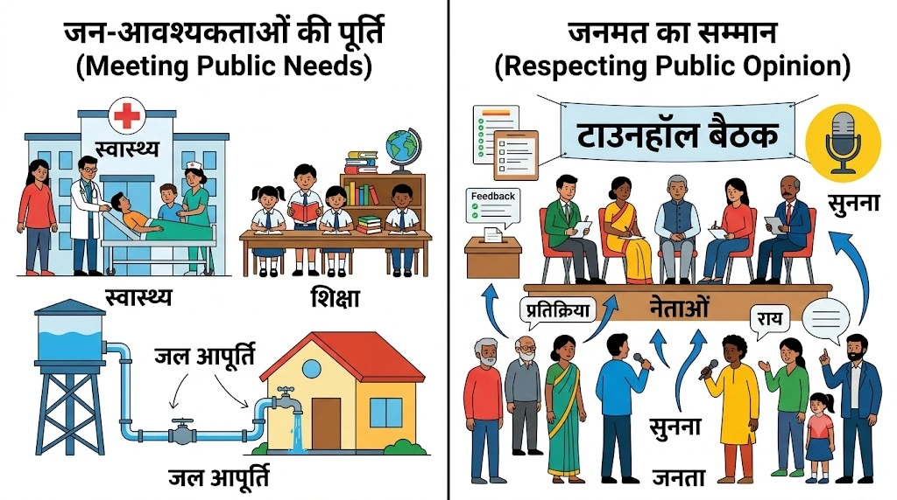
💡 चित्र 5.5: जिम्मेदार सरकार
1. जन-आवश्यकताओं की पूर्ति: स्वास्थ्य, शिक्षा व रोजगार की जन-मांगों पर सरकार त्वरित ध्यान देती है | 2. जनमत का सम्मान: विरोध-प्रदर्शनों व सुझावों के आधार पर जनविरोधी नीतियों को वापस लेना या बदलना।
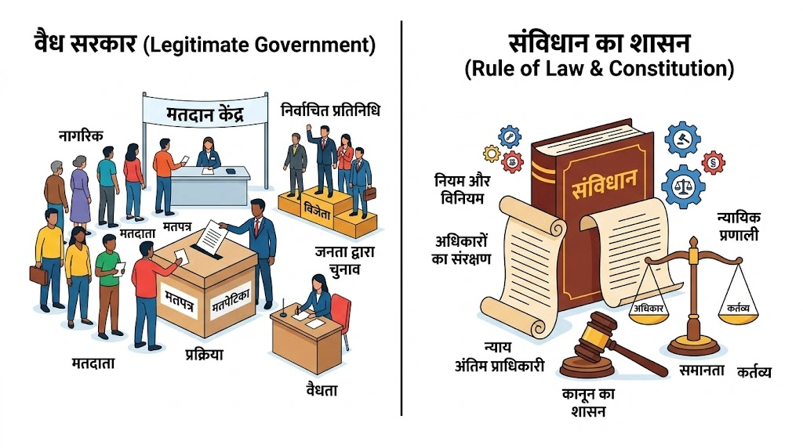
🗳️ चित्र 5.6: वैध सरकार
1. जनता की अपनी सरकार: स्वतंत्र व निष्पक्ष चुनाव प्रणाली से चुनी गई वैध सरकार | 2. संविधान का शासन: शासन का संचालन मनमाने ढंग से नहीं, बल्कि संवैधानिक नियमों के तहत होता है।
📌 भाग 3: आर्थिक संवृद्धि और विकास
संवृद्धि दर की तुलना बनाम मुफ़्त शिक्षा, स्वास्थ्य व जनकल्याणकारी योजनाओं द्वारा गरीबी मिटाना।
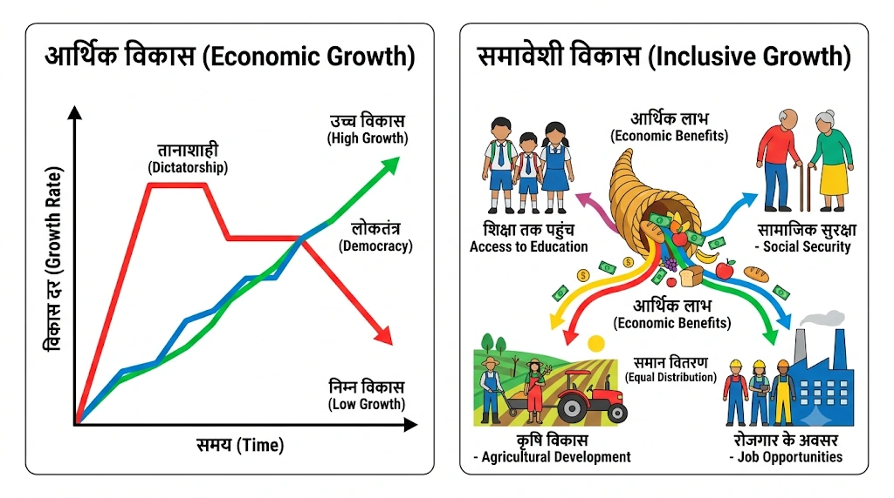
🏭 चित्र 5.7: आर्थिक विकास - लोकतंत्र बनाम तानाशाही
1. तानाशाही में संवृद्धि: फैसलों में तेजी, लेकिन नागरिकों की स्वतंत्रता का अभाव | 2. लोकतंत्र में समावेशी विकास: स्वतंत्रता, न्याय और जन-कल्याण के साथ सतत आर्थिक प्रगति।
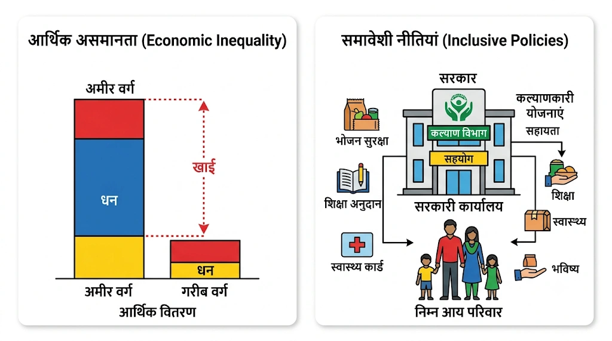
📉 चित्र 5.8: आर्थिक असमानता में कमी
1. धन का विषमतापूर्ण वितरण: मुट्ठी भर धनी वर्ग के पास राष्ट्रीय संपत्ति का बड़ा हिस्सा केंद्रित होना | 2. समावेशी नीतियां: गरीबों के लिए मुफ़्त अनाज, स्वास्थ्य सेवा व न्यूनतम आय सुरक्षा द्वारा अंतर कम करना।
📌 भाग 4: गरीबी उन्मूलन व सामाजिक विषमता
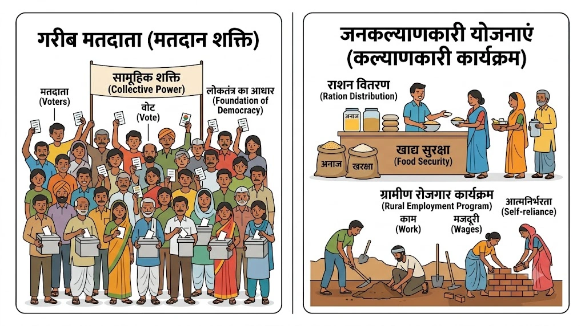
🌾 चित्र 5.9: गरीबी उन्मूलन में लोकतंत्र का रिकॉर्ड
1. गरीब मतदाता प्रमुख शक्ति: लोकतांत्रिक चुनावों में गरीब नागरिकों की वोट संख्या निर्णायक होती है | 2. जनकल्याणकारी योजनाएं: मनरेगा, जनधन योजना, आवास व राशन प्रणाली से सामाजिक सुरक्षा सुनिश्चित करना।
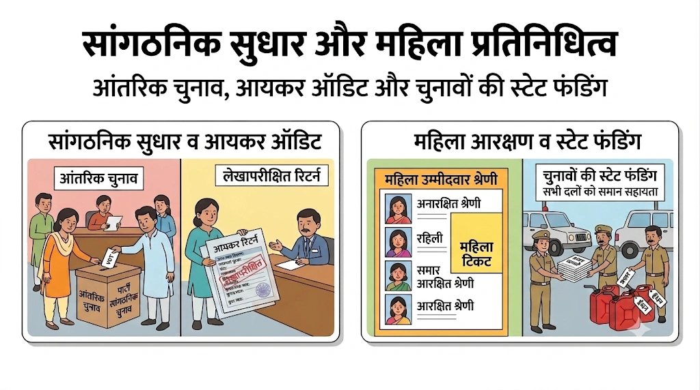
⚖️ चित्र 5.10: असमानता मिटाने के कानूनी व सामाजिक प्रयास
1. प्रगतिशील कर प्रणाली: अमीरों पर उच्च कर लगाकर जनकल्याण में खर्च करना | 2. अवसरों की समानता: सभी वर्गों के बच्चों के लिए समान शिक्षा व रोजगार के संवैधानिक अवसर।
📌 भाग 5: सामाजिक विविधताओं में सामंजस्य
🤝 चार्ट 5.4: सामाजिक विविधताओं में सामंजस्य
बहुमत केवल बहुसंख्यकों का शासन न बने + हर नागरिक को बहुमत का हिस्सा बनने का अवसर मिले।
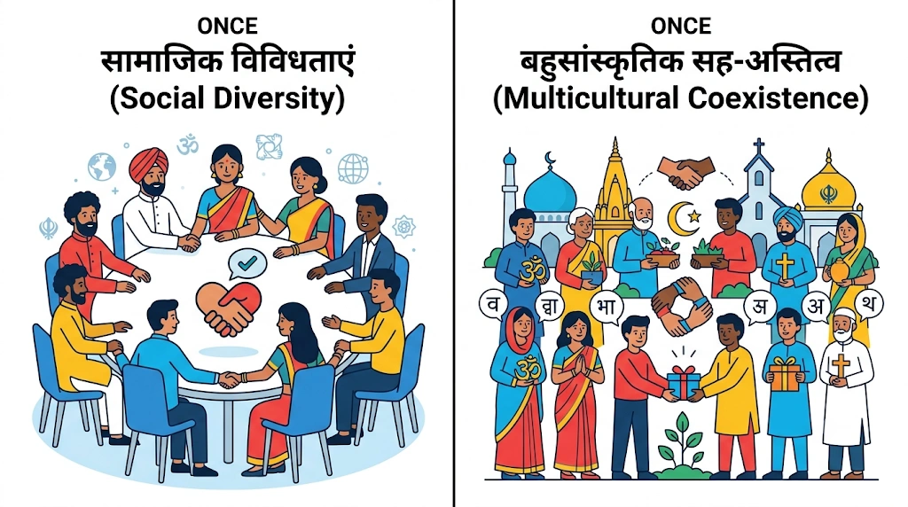
🕊️ चित्र 5.11: सामाजिक विविधताओं में शांतिपूर्ण सामंजस्य
1. मतभेदों का शांतिपूर्ण समाधान: टकराव व हिंसा के स्थान पर संवाद व कानून द्वारा विवाद सुलझाना | 2. बहुसांस्कृतिक सह-अस्तित्व: विभिन्न भाषाओं, धर्मों व संस्कृतियों का सम्मानपूर्वक साथ रहना।
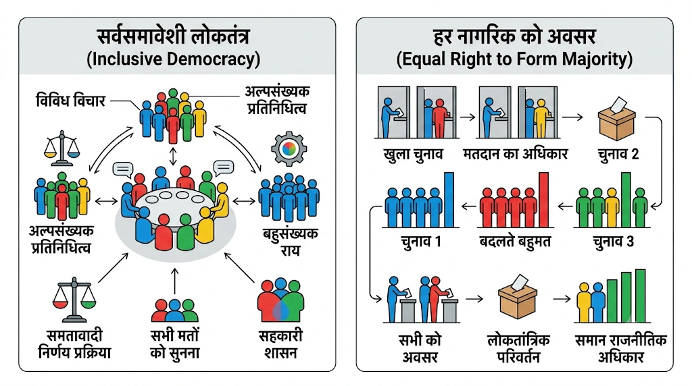
👥 चित्र 5.12: बहुमत का शासन और सर्वसमावेशी लोकतंत्र
1. केवल बहुसंख्यकों का शासन नहीं: बहुमत का अर्थ किसी एक धर्म या जाति का स्थायी एकाधिकार नहीं है | 2. हर नागरिक को अवसर: प्रत्येक नागरिक को अलग-अलग मुद्दों पर बहुमत का हिस्सा बनने का समान अधिकार है।
📌 भाग 6: नागरिकों की गरिमा और आजादी
👑 चार्ट 5.5: नागरिकों की गरिमा और आजादी
महिलाओं की गरिमा व समान अवसर + वंचित जातियों को सशक्त बनाना व कानूनी संरक्षण।
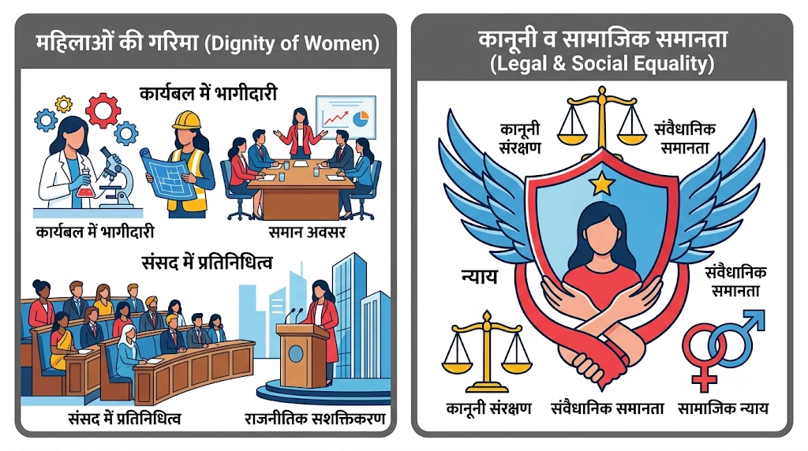
👩💼 चित्र 5.13: महिलाओं की गरिमा और समान अधिकार
1. सामाजिक व राजनीतिक समानता: महिलाओं को पुरुषों के समान अधिकार, वेतन व राजनीतिक प्रतिनिधित्व | 2. कानूनी संरक्षण: घरेलू हिंसा, उत्पीड़न व भेदभाव के विरुद्ध सख्त कानूनी सुरक्षा।
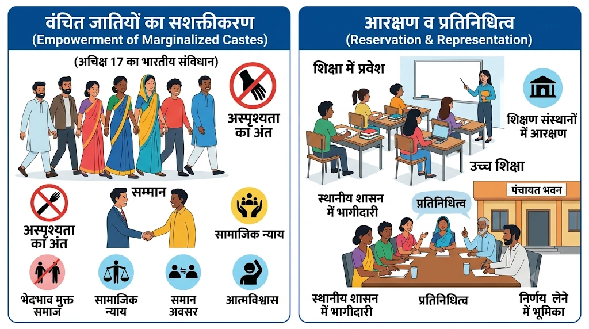
✊ चित्र 5.14: वंचित व पीड़ित जातियों का सशक्तीकरण
1. अस्पृश्यता का अंत (अनुच्छेद 17): जातिगत भेदभाव व छुआछूत का पूर्ण संवैधानिक अंत | 2. आरक्षण व प्रतिनिधित्व: विधायिका, शिक्षा व सरकारी सेवाओं में वंचित वर्गों हेतु सीटें आरक्षित।
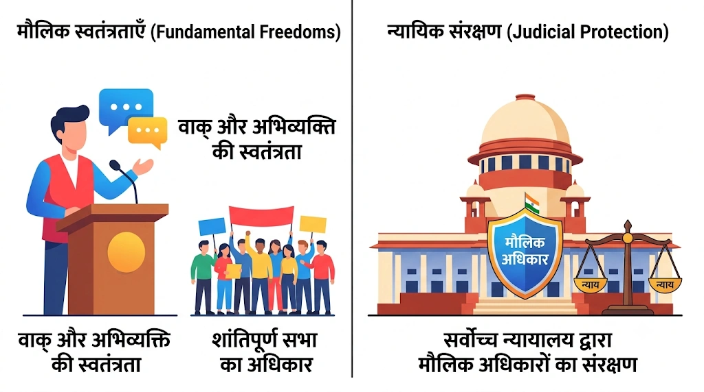
🕊️ चित्र 5.15: नागरिकों की मौलिक स्वतंत्रताएँ
1. विचार व अभिव्यक्ति की स्वतंत्रता: बोलने, लिखने व शांतिपूर्ण विरोध जताने का नागरिक अधिकार | 2. न्यायिक संरक्षण: अधिकारों के उल्लंघन पर न्यायालय जाकर न्याय प्राप्त करने का अधिकार।
📌 भाग 7: स्वतंत्र संस्थान, मीडिया एवं जन-अपेक्षाएं
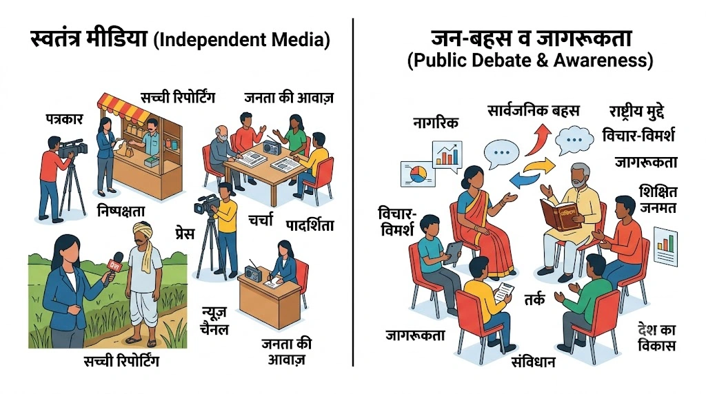
📰 चित्र 5.16: स्वतंत्र मीडिया और प्रेस की भूमिका
1. निष्पक्ष रिपोर्टिंग: सरकार के कामकाज, नीतियों व कमियों को बिना डर के जनता के समक्ष प्रस्तुत करना | 2. जन-बहस व जागरूकता: राष्ट्रीय मुद्दों पर टीवी, समाचार पत्रों व डिजिटल माध्यमों द्वारा स्वस्थ चर्चा।
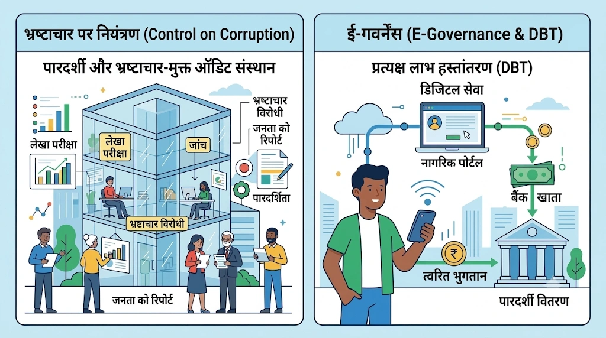
💻 चित्र 5.17: भ्रष्टाचार पर नियंत्रण व डिजिटल पारदर्शिता
1. पारदर्शी जांच संस्थाएं: लोकपाल व केंद्रीय जांच एजेंसियों द्वारा भ्रष्टाचार पर अंकुश | 2. ई-गवर्नेंस: योजनाओं का पैसा सीधे लाभार्थी के बैंक खाते में भेजने से बिचौलियों का अंत।
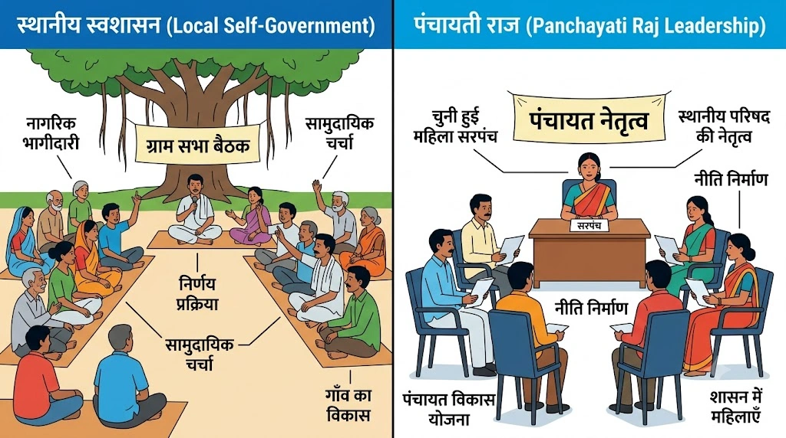
🏡 चित्र 5.18: स्थानीय स्वशासन और ग्राम सभा
1. प्रत्यक्ष जन-सहभागिता: ग्राम सभा में गाँव के विकास फैसलों में सभी ग्रामीणों की सीधी भागीदारी | 2. पंचायती राज में महिला प्रतिनिधित्व: स्थानीय निकायों में महिलाओं के लिए 33% से 50% पद आरक्षित।
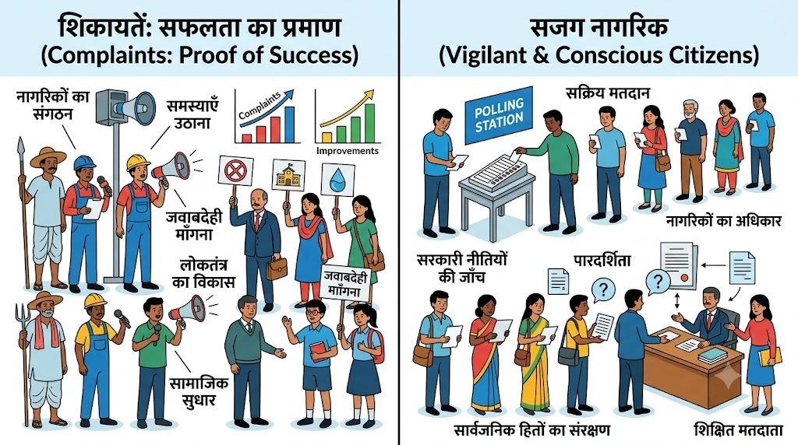
📈 चित्र 5.19: शिकायतें - लोकतंत्र की सफलता का प्रमाण
1. जागरूक व सजग नागरिक: लोग अधिकारों के प्रति सचेत हैं और सरकार से बेहतर प्रदर्शन की मांग करते हैं | 2. लोकतंत्र का विस्तार: शिकायतों का बना रहना यह सिद्ध करता है कि नागरिक मूक दर्शक नहीं, बल्कि सक्रिय भागीदार हैं।
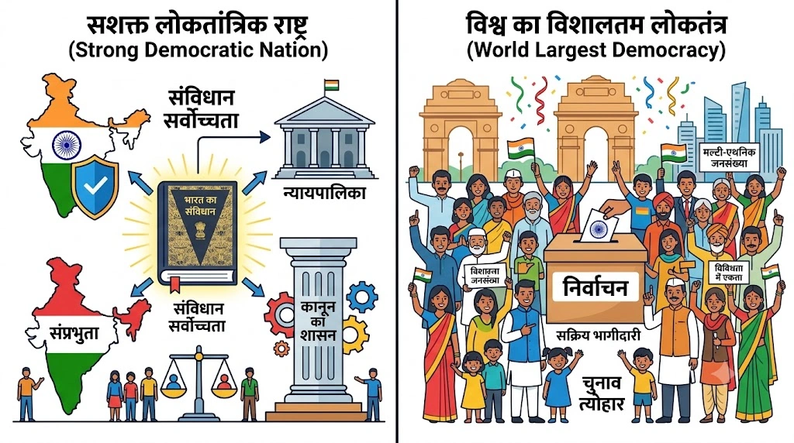
चित्र 5.20: सशक्त एवं स्वाभिमानी लोकतांत्रिक राष्ट्र
1. संवैधानिक सर्वोच्चता व संप्रभुता: 'हम भारत के लोग' के सिद्धांत पर आधारित सर्वोच्च जन-सत्ता | 2. विश्व का विशालतम लोकतंत्र: 140 करोड़ नागरिकों का विविध, एकजुट, स्वतंत्र व स्वाभिमानी भारत।
संवृद्धि दर की तुलना बनाम मुफ़्त शिक्षा, स्वास्थ्य व जनकल्याणकारी योजनाओं द्वारा गरीबी मिटाना।
📌 भाग 4: सामाजिक विविधताओं में सामंजस्य
🤝 चार्ट 5.4: सामाजिक विविधताओं में सामंजस्य
बहुमत केवल बहुसंख्यकों का शासन न बने + हर नागरिक को बहुमत का हिस्सा बनने का अवसर मिले।
📌 भाग 5: नागरिकों की गरिमा और आजादी
👑 चार्ट 5.5: नागरिकों की गरिमा और आजादी
महिलाओं की गरिमा व समान अवसर + वंचित जातियों को सशक्त बनाना व कानूनी संरक्षण।
💡 बोर्ड परीक्षा हेतु अति-महत्वपूर्ण तथ्य
- पारदर्शिता: नागरिक यह जान सकें कि फैसला लेने में नियमों का पालन हुआ है या नहीं।
- उत्तरदायी सरकार: जो जनता के प्रति जवाबदेह हो और फैसले सोच-समझकर ले।
- वैध सरकार: जो जनता द्वारा स्वतंत्र चुनाव के माध्यम से चुनी जाती है।
- तानाशाही बनाम लोकतंत्र: तानाशाही में संवृद्धि दर थोड़ी अधिक हो सकती है, पर स्वतंत्रता और गरिमा केवल लोकतंत्र में मिलती है।
- शिकायतें: जनता की बढ़ती शिकायतें लोकतंत्र की विफलता नहीं, बल्कि उसकी सफलता का प्रमाण हैं।